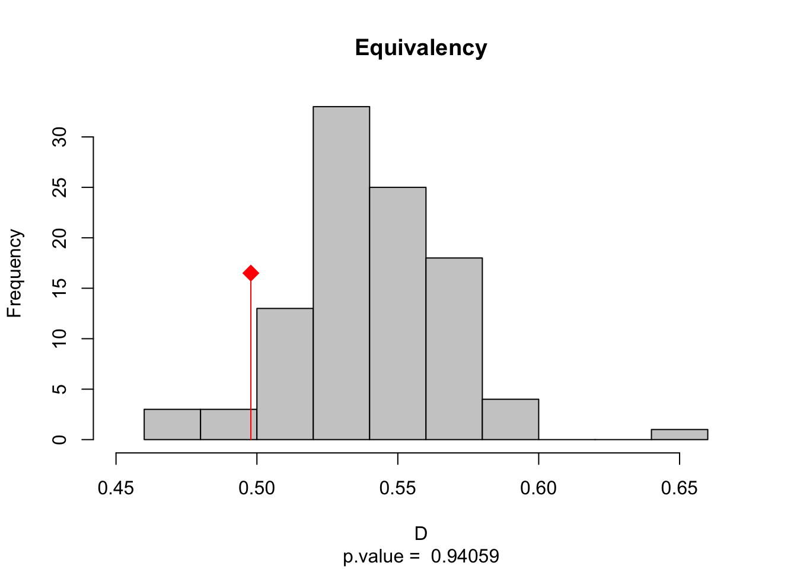

Native Range: Neotropics (Central and South America), where it is widespread but often kept in check by natural enemies.
Invasive Range (Focus: India): A major invasive threat in the humid tropical and subtropical zones of India.
Key Hotspots: Heavily infests Northeast India (Assam, Arunachal Pradesh), the Western Ghats (Kerala, Karnataka), and the Andaman & Nicobar Islands.
Habitat: Thrives in disturbed forests, tea plantations, agricultural fallows, and riverbanks.
Ecological Traits:
Growth Habit: A fast-growing, perennial creeper/climber. It is known as “Mile-a-minute” because of its rapid vegetative growth (up to 8–9 cm in 24 hours).
Mechanism of Impact: It is a “smothering” invasive; it climbs over native vegetation and crops, blocking sunlight and physically crushing underlying plants. It also releases allelopathic chemicals that inhibit the growth of other plants.
Dispersal: Produces thousands of lightweight seeds dispersed by wind (anemochory), allowing for rapid climatic tracking and range expansion.
Climatic Niche Characteristics:
Grinnellian Constraints: The species is strongly limited by humidity and temperature. It requires high rainfall and cannot tolerate frost or prolonged drought.
Niche Conservatism vs. Shift: In India, it closely follows the humid tropical climatic envelope. However, recent reports suggest it is expanding into slightly drier and cooler elevations in the Himalayas, making it a perfect candidate to test for Niche Shift vs. Niche Conservatism at the margins of its range.
Premise
When we use Species Distribution Models (SDMs) to predict where an invasive species might spread, we typically train our models on environmental data from its native range and project them onto the invasive range. This process of “transferring” a model across geographic space relies entirely on the Niche Conservatism Hypothesis.
Why Niche Conservatism is the “SDM Assumption”
Niche conservatism is the principle that a species will maintain its environmental requirements (its “niche”) even when moved to a new continent. If a species is conservative, we can use its native habitat preferences to accurately predict its future invasion footprint.
And what could go wrong if untested?
If we skip testing for niche conservatism before running our SDM, we risk two major types of errors:
Underestimation (Niche Expansion): If the species undergoes niche expansion in its new range (adapting to colder waters or different salinity than what is found in its native range), a model based only on native data will fail to predict its true invasion potential.
Overestimation (Niche Unfilling): If the species has not yet reached its full potential in the new range (niche unfilling), we might assume it is less “fit” than it actually is, leading to a false sense of security in areas that are actually at high risk.
How can we test the assumption?
To ensure our SDMs are robust, we use the COUE framework to quantify exactly how much of the native niche is being conserved (Stability) versus how much is changing (Expansion).
COUE = Centroid shift, Overlap, Unfilling, and Expansion
The null hypothesis: it assumes that the species will occupy the same climatic space in its invasive range that it does in its native range.
Simultaneously, MESS (Multivariate Environmental Similarity Surfaces) analysis identifies areas of “non-analog” or novel climates. This is crucial for SDM because predictions in areas where the MESS value is negative (novel climate) are statistically unreliable; we are essentially asking the model to guess how the species will behave in a climate it has never experienced before.
To test spatial niche conservatism between native and non-native ranges of Mikania micrantha using the centroid shift, overlap, unfilling, and expansion (COUE) framework.
To assess environmental analogy between two ranges using multivariate environmental similarity surface (MESS) analysis.
COUE analysis
Step 1: Install and load the required packages
library(ecospat)library(adehabitatHR)
Loading required package: sp
Loading required package: ade4
Loading required package: adehabitatMA
Registered S3 methods overwritten by 'adehabitatMA':
method from
print.SpatialPixelsDataFrame sp
print.SpatialPixels sp
Loading required package: adehabitatLT
Loading required package: CircStats
Loading required package: MASS
Warning: package 'MASS' was built under R version 4.2.3
Loading required package: boot
#Set the working directory here
Step 2: Load the data
#Loading data# Set the root directory for all subsequent code chunkssetwd("/Users/achyutkumarbanerjee/Desktop/data_Mikania")nat<-read.csv("ecospat.native.csv")inv<-read.csv("ecospat.invasive.csv")#These files should have the following information: #longitude and latitude and their corresponding values of the 19 bioclimatic #variables. The long-lat values are of the locations where the species is present#and the background. An additional column (here named 'sp') is attached at the #end to designate presence (1) and background (0) locations.#Background locations are proxies for absences (pseudo-absence).
#PCA scores for the whole study areascores.globclim <- pca.env$li
#PCA scores for the species native distributionscores.sp.nat <-suprow(pca.env,nat[which(nat[,22]==1),3:21])$li#PCA scores for the species introduced distributionscores.sp.inv <-suprow(pca.env,inv[which(inv[,22]==1),3:21])$li# PCA scores for the whole native study areascores.clim.nat <-suprow(pca.env,nat[,3:21])$li# PCA scores for the whole introduced study areascores.clim.inv <-suprow(pca.env,inv[,3:21])$li
Step 4: Estimate occurrence densities
#Grid of the native nichegrid.clim.nat <-ecospat.grid.clim.dyn(glob=scores.globclim,glob1=scores.clim.nat,sp=scores.sp.nat, R=100,th.sp=0)#Grid of the introduced nichegrid.clim.inv <-ecospat.grid.clim.dyn(glob=scores.globclim,glob1=scores.clim.inv,sp=scores.sp.inv, R=100,th.sp=0)
Step 5: Estimate niche overlap
#Compute Schoener's D, index of niche overlapD.overlap <-ecospat.niche.overlap (grid.clim.nat, grid.clim.inv, cor=T)$DD.overlap
[1] 0.4978501
Step 6: Perform niche equivalency test
#Niche equivalency test H1#Is the overlap between the native and introduced niche higher than two random niches?eq.test <-ecospat.niche.equivalency.test(grid.clim.nat, grid.clim.inv,rep=100)#Plot the resultecospat.plot.overlap.test(eq.test, "D", "Equivalency")

Step 7: Perform niche similarity test
#Niche similarity test H1#Is the overlap between the native and introduced niches higher than #when the invasive niche is randomly introduced in the introduced study area?sim.test <-ecospat.niche.similarity.test(grid.clim.nat, grid.clim.inv,rep=1000,rand.type=2)#Plot the resultecospat.plot.overlap.test(sim.test, "D", "Similarity")
#Loading datasetwd("/Users/achyutkumarbanerjee/Desktop/data_Mikania")mess.data<-read.csv("mess_data.csv")#The data file contains occurrence locations of both native and introduced ranges #and the corresponding bioclimatic variables. #An additional column at the end (here named 'sp') has the range information.mess.data<-mess.data[c(1:21)]#Defining projection and calibration data setsproj<- mess.data[657:1087,] #Projection data set (introduced range)cal<-mess.data[1:656,] #Calibration data set (native range)#Compute MESS analysismess.object<-ecospat.mess(proj,cal,w="default")#Plot the resultecospat.plot.mess(mess.object = mess.object)#Three plots are generated#1. MESS plot pixels in red indicate sites where at least one environmental #predictor has values outside of the range of that predictor in the calibration #data set. 2. In the MESSw plot, same as previous plot but with weighted by the #number of predictors. 3. The MESSneg plot shows at each site how many #predictors have values outside of their calibration range.